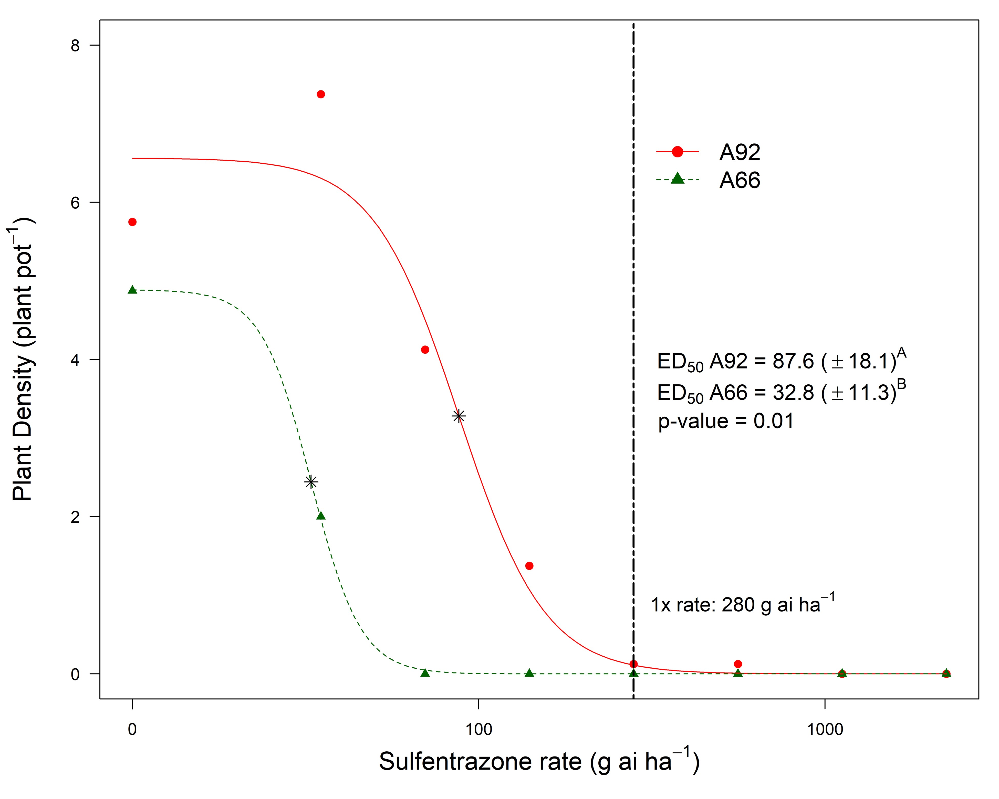
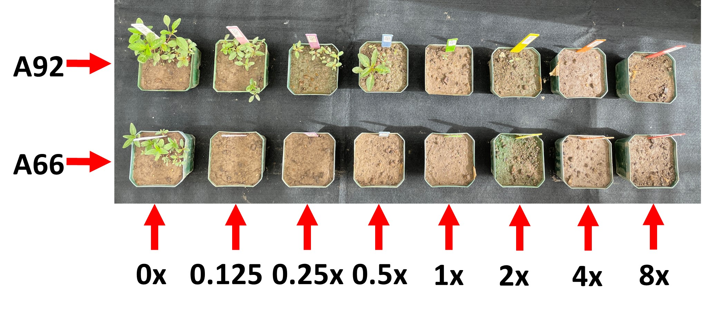
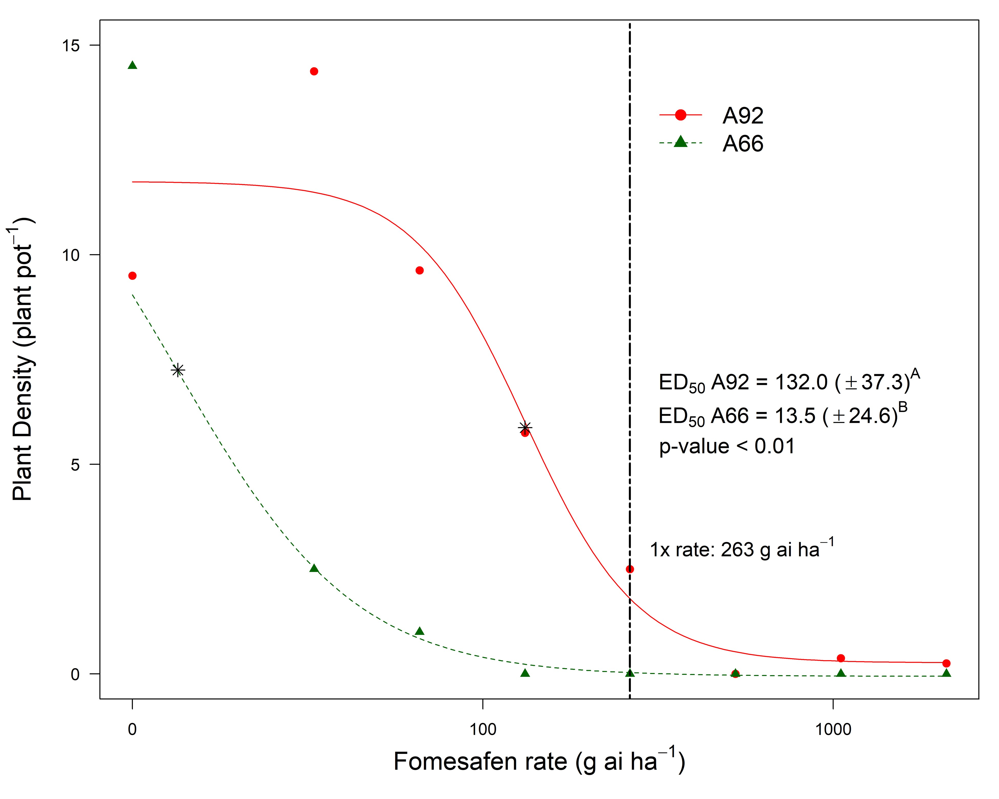
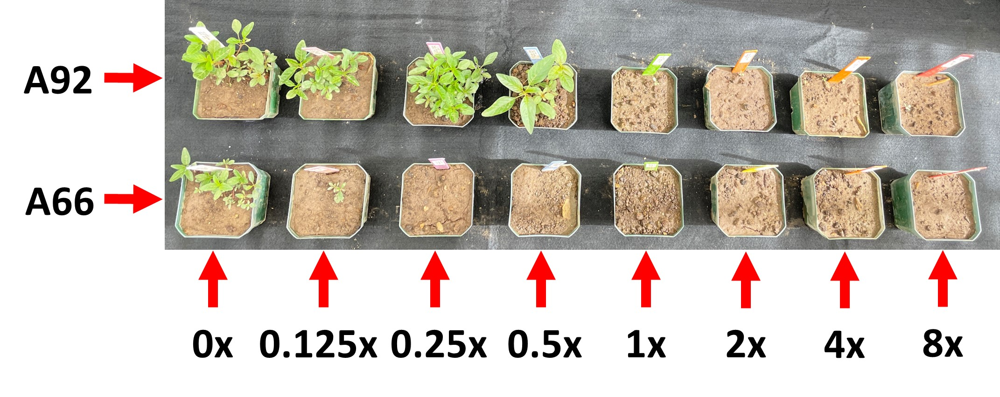

"The WiscWeeds program recommends the use of effective soil residual herbicides for control of waterhemp populations resistant to glyphosate and other commonly used POST herbicides. But now we have documented waterhemp resistance to the very effective soil residual herbicide sulfentrazone (Group 14). That's not good news! It's time to truly think outside the jug and integrate chemical and non-chemical management practices." Rodrigo Werle on behalf of the WiscWeeds Team

Herbicide resistance monitoring across Wisconsin has been a top priority to UW-Madison Weed Science researchers (Figure 1). Over the past five years, new cases of waterhemp (Amaranthus tuberculatus; check our published paper here), Palmer amaranth (Amaranthus palmeri; check our published paper here), and giant ragweed (Ambrosia trifida; check our slides presented during the 2021 North Central Weed Science Society annual meetings here) have been confirmed by the WiscWeeds program. Concerned with the alarming rate of herbicide resistance across our agricultural landscape and as an attempt to support adoption of more sustainable crop and weed management practices, the WiscWeeds program has been promoting diversified integrated weed management practices to alleviate the selection pressure imposed by the recurrent use of commonly adopted herbicides. Rotation of herbicide mixtures containing multiple effective sites of action including the adoption of effective soil residual herbicides, inclusion of cover crops, adoption of narrow row spacing, and reducing weed seed dispersal through strategic field harvest order and combine cleaning are just a few examples of integrated weed management practices that can be adopted to alleviate herbicide resistance selection pressure in corn-soybean production systems. The case study that will be presented below truly highlights the importance of implementing more diversified approaches to weed management programs as often as possible.
In 2021, an Ag Consultant from WI (a trusted advisor of the WiscWeeds Research Coalition) reached out to our program expressing concern about a waterhemp population from southern WI (defined here as "A92") which was not properly controlled with the soil-applied field label rate of sulfentrazone (Spartan 4F® at 8 fl oz/acre). In other words, the PRE-emergence herbicide program containing sulfentrazone did not provide the length of residual waterhemp control that it should have provided. Additionally, we were informed that sulfentrazone had been used during previous soybean growing seasons in the field where this population was identified. Therefore, waterhemp seeds were collected and handed to our program for resistance investigation via dose-response greenhouse experiments. Usually, dose-response experiments to confirm herbicide resistance consist of exposing both a suspected resistant (A92 here) and a known susceptible population to multiple herbicide rates, ranging from very low to extremely high, to obtain a dose-response curve that estimates how much biomass or plant density reduction a certain herbicide rate will provide compared to the nontreated control (no herbicide treatment). Particularly, we are interested in the comparison between the estimated dose that will provide 50% biomass or plant density reduction (popularly known as ED50) for both the suspected resistant and the known susceptible population. From these comparisons, we can draw conclusions if the population of interest is indeed resistant to the herbicide being evaluated and, more importantly, what is the level of resistance (the bigger the difference between ED50 values for the resistant and the known susceptible population, the higher the level of resistance).
Switching back to our investigation, after comparing the concerning A92 population to a known PPO-inhibitor susceptible population (A66) via replicated dose-response greenhouse experiments with sulfentrazone (Spartan 4F®; field label rate: 8 fl oz ac-1) and fomesafen (Flexstar®; field label rate: 16 fl oz ac-1), we observed that the sulfentrazone ED50 for the A66 population was 32.8 g ai ha-1 compared to 87.6 g ai ha-1 for the A92 population (see Figures 2 and 3). In other words, we needed almost three times more sulfentrazone to obtain 50% plant density reduction for the A92 compared to the A66 population. Fomesafen results were even more alarming: fomesafen ED50 for the A66 population was 13.5 g ai ha-1 compared to 132.0 g ai ha-1 for the A92 population (see Figures 4 and 5); almost ten times more active ingredient needed.
SULFENTRAZONE RESULTS (1x sulfentrazone rate = 280 g ai ha-1 = 8 fl oz of Spartan 4F per acre):


FOMESAFEN RESULTS (1x fomesafen rate = 263 g ai ha-1 = 1 pt of Flextar per acre):


TAKE HOME:
Our results indicate that A92 is resistant to soil-applied sulfentrazone and fomesafen and, from our knowledge, this is the first documented case of waterhemp resistance to soil-applied sulfentrazone and fomesafen (Group 14 soil residual herbicides) in Wisconsin.
From a practical standpoint, these results suggest that the window of soil residual control of this A92 waterhemp population from southern Wisconsin with soil-applied sulfentrazone and fomesafen is expected to be reduced.
These results are very concerning given the importance of these two herbicides for residual waterhemp control in Wisconsin soybean production.
Our results highlight the importance of a proactive herbicide resistance management programs, including the diversified use of effective herbicide mixtures aligned with non-chemical weed management strategies.
Future research will investigate the A92 response to PPO-inhibitor herbicides applied POST (e.g., Cobra, Flextar, Resource), and the molecular mechanism of resistance.
Please help us share these results with our Ag Community. Many thanks to our stakeholders that continue to support our herbicide resistance monitoring efforts. This effort is sponsored by the Wisconsin Soybean Marketing Board.
The research reported herein is being led by Felipe A. Faleco (WiscWeeds PhD student). Click here to see Faleco`s poster presented during the 2022 North Central Weed Science Society Meetings (December 2022) in St. Louis, MO.
ADDITIONAL RESOURCES:
This article was written by Felipe A. Faleco (PhD Student), Nick Arneson (Outreach Program Manager), and Rodrigo Werle (Assistant Professor). All authors are affiliated with UW-Madison.